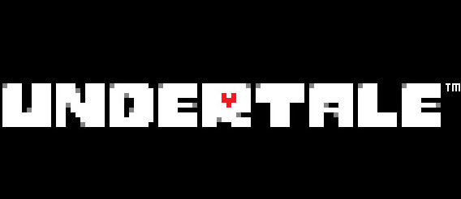

Top 3 Games que você deveria jogar
Olá tudo bem com você? Irei te indicar 3 jogos facisnante com hístorias para se extrair e mudar a pespectiva de vida, bem contudo toda via vamos para o top 3!
3 - Undertale (2015)
Undertale um jogo onde a determinação é seu principal aliado, juntamente com seus amigos embarque em uma aventura onde você escolherá seu caminho seja ele pacifíco ou violento, faça as melhores escolhas pois nesse jogo cada ação impacta no seu destino, desafiando o mal cara alcançar a luz, em um mundo onde criaturas foram excluida do mundo dos humanos ajude-os a libertalos e alcançar a paz
2 - Limbo (2010)

Limbo, com paletas de cores ultilizando o preto ao branco, com pegada de jogos de Terror/Dark Limbo se consiste em encarar o medo e enfrentar o oculto, a história cheia de mistérios e puzzles se inicia cativante e chega a niveis impactantes em busca de sua irmã desaparecida, em meio sua jornada se depara com inimigos e cara fugir você deve ter habilidade e estratégia, bem vindo ao limbo.
1 - Little Nightmare (2017 - 2021)

Little Nightmare um dos melhores jogos indie já feitos se consiste em uma aventura focada em um universo depravado onde os mais fortes reinam na terra e os mais fracos se tornam excluidos ou mortos, o protagonista se aventura nesse mundo devastado por impureza onde sua amiga foi sequestrada por um vilão maligno, seu dever é resgata-la e entender a história e seus enigmas pois cada passo vale a pena
Se você gostou do meu trabalho nâo esqueça de compartilhar :)